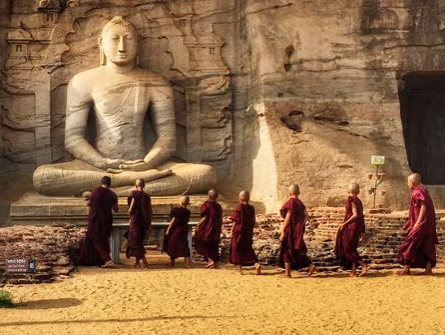
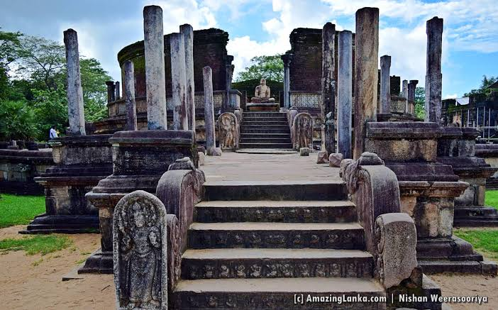
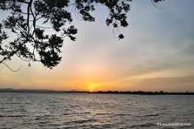

01
Ancient History
Walk through a city that reflects the grandeur of medieval Sri Lanka and the political strength of the kingdom.
Ancient Kingdom of Sri Lanka
Discover the history, culture and magnificent archaeological sites of Sri Lanka's medieval capital.
About Polonnaruwa
Polonnaruwa is one of Sri Lanka's most important archaeological treasures, once serving as the capital of the island under the Kingdom of Polonnaruwa. The city is famous for its majestic ruins, large irrigation works, and Buddhist heritage sites that continue to inspire generations of visitors and scholars.
Why Visit Polonnaruwa?
Walk through a city that reflects the grandeur of medieval Sri Lanka and the political strength of the kingdom.
Discover preserved ruins, statues, monasteries and royal structures that reveal past civilizations.
Experience the spiritual and artistic traditions that shaped the city as a major Buddhist center.
Admire carved stonework, symmetrical layouts, and elegant monuments that reflect master craftsmanship.
Featured Places

The extraordinary rock temple known for its colossal Buddha statues carved from granite.
Learn More
One of the finest examples of a circular relic house in ancient Sri Lanka.
Learn MoreA grand stupa that stands as a symbol of devotion, design, and royal patronage.
Learn More
An immense reservoir demonstrating the engineering brilliance of medieval Sri Lanka.
Learn More